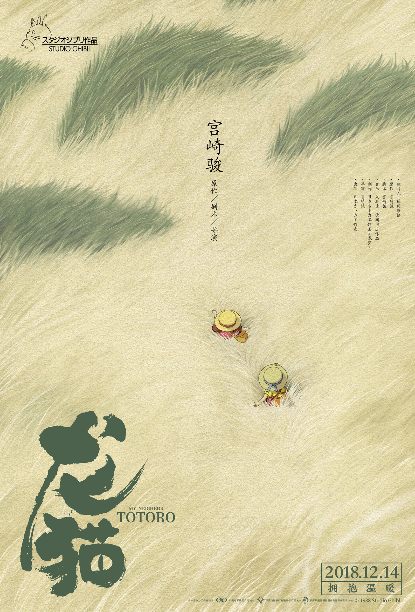
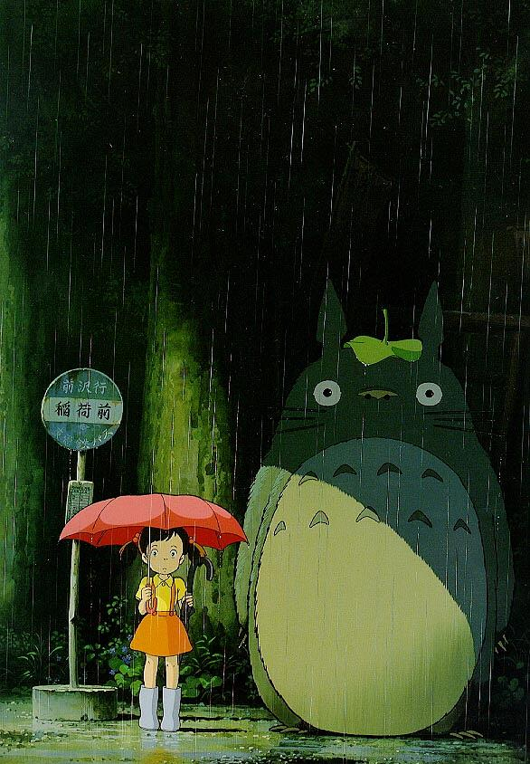

龙？猫？还是龙猫
2021年8月9日17:58:30
这是当初我在集中观看宫崎骏动画片中的一集，以前其实小时候在爸爸买来的杂志上有看过介绍（包括千与千寻），当时的杂志还是比较灵异的那种，看的小时候的我很是害怕。后来18年那时候不知道怎么突然看起来了，第一个看的应该是幽灵公主，然后我就看了龙猫吧。
打开后，没想到龙猫居然是这么老的片子了，88年，那时候国内还百废待兴、欣欣向荣呢，而宫崎骏那时候就能制作这种动画片，实属了不起，而且当时的技术比现在来说落后很多，与之对应的也是需要更多的人力、精力和物力。看完后其实觉得，主线很淡，爸爸带着小女孩和妹妹搬到了乡下，妈妈得了肺结核要在疗养院里静养（当时没有好的治疗方法，不知道是什么年代，至少二战时候还是全球公认的绝症，只能集中隔离等着自己病症减弱）。姐姐妹妹就很想见妈妈一面，同时也是乡下无聊，打扫家里时候发现小煤球（记不太清名字），从而遇到大、中、小龙猫，一段温馨的故事。
电影中没有什么矛盾，也只有点点的悬念来推动故事情节的发展。也许看的不是情节，而是画面、情感，还有音乐。没有紧张刺激的打斗，也没有高潮迭起的悬疑，也不是多面精彩炫酷的画面，就是简简单单的故事，配上宫崎骏心中的神奇生物——龙猫，与久石让倾情奉献的音乐，就这样成为了一代经典。虽然如今我也想不起什么内容，但至少龙猫的身影已经深深刻入了我的脑海之中。2018年12月龙猫居然在大陆上映了，我当时考研来不及去看，但还有一个原因是不太喜欢新海报。还是那个画面最能代表我心中的龙猫，她们站在公交车站，龙猫顶着荷叶，小女孩打着伞，路灯下，半斜的灯光。
这种意境实在令人回味无穷。
